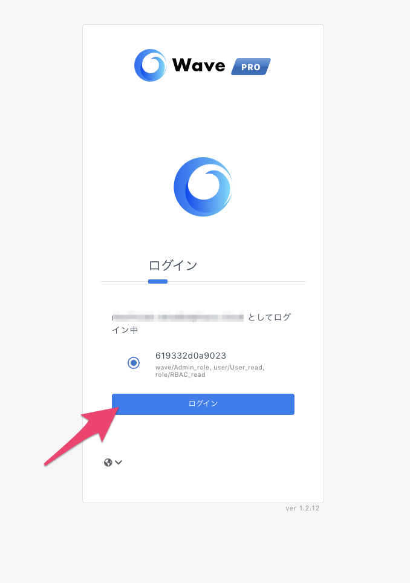

SAMLベースのフェデレーション認証
機能概要
SAMLベースのフェデレーション認証がサポートされ、Wave PROへログインする際にSSO（Single Sign on）を使ってログインをすることができるようになりました。
この機能により従来のパスワード認証によるアクセスに比べ、管理者側での集権的な管理が可能になり、セキュリティを高めることができます。
設定手順
今回は Okta を例に説明していますが、Okta, Auth0, Google Workspace などのSAML 2.0 ベースIdP (ID プロバイダ) に対応しています。
SP (サービスプロバイダー) とは、ここではWave PROを指します。
今回はWave PRO のルートユーザーでログインする場合の設定を記載しています。サブユーザーを使用する場合はこちらのドキュメントをご覧ください。
1. OktaのAdminアカウントにログインする

2. [Applications]を選択し、[Create App Integration] をクリック

3. SAML 2.0 を選択し Next をクリック

4. Create SAML Integrationに必要事項を記入
Single sign-on URL: https://login.alphaus.cloud/wavepro/saml
Audience URI (SP Entity ID): https://login.alphaus.cloud/wavepro/saml


Attribute statements:
Name: https://app.alphaus.cloud/wavepro/SAML/Attributes/IDPID
Name format: leave default (Unspecified)
Value: user.waveproIdpId
Name: https://app.alphaus.cloud/wavepro/SAML/Attributes/Profiles
Name format: leave default (Unspecified)
Value: user.waveproProfiles
Name: https://app.alphaus.cloud/wavepro/SAML/Attributes/SessionName
Name format: leave default (Unspecified)
Value: user.email


5. SAML Signing Certificatesを取得する
Applications > 作成したアプリケーション（今回はWavePROSSOIdp）＞Sign Onタブ
ページ下部のSAML Signing Certificates のActionsタブから View IdP metadata を選択

別画面で開いた情報を.xml の拡張子で保存する

6. Wave PRO にIdP設定を追加する
環境設定 > IdP設定 > +IdPを追加 をクリック

さきほどダウンロードしたファイルをアップロード

7. Profile attribute を追加する
メニューのDirectory > Profile Editorで > User (default) をクリック

Add Attribute から以下のattributeを追加する
Display name: waveproIdpId（他の名前でも可）
Variable name: waveproIdpId
Display name: waveproProfiles（他の名前でも可）
Variable name: waveproProfiles


8. Okta でユーザー設定をする
Directory > People > Add person よりユーザーを追加する

9. アプリケーションにユーザーをアサインする
Applications > Wave PROのアプリケーション > Assignments > Assignボタンより先ほど作成したアカウントを追加する

10. ユーザー情報をアップデートする
Directory > People > ユーザー選択 > Profile > Edit をクリック

11. AttributesのwaveproIdpId とwaveproProfilesをアップデートする

waveproIdpId = Wave PRO の環境設定 > IdP設定で確認できるID

waveproProfiles = [Wave ID]:wave/[RBACで設定しているwave権限],user/[RBACで設定しているuser権限],role/[RBACで設定しているrole権限]
▼ Wave IDの確認画面

▼ [RBACで設定しているwave権限],[RBACで設定しているuser権限],[RBACで設定しているrole権限]の確認画面
Wave PROの環境設定 > サブユーザーの管理 > サブユーザー管理画面を開く で遷移した先で作成済みのAdmin権限のWAVE、RBAC、USERの内容を記載する

12. ログインの確認
設定は以上です。
メニューのApplications > 作成したWave PROアプリケーション > General > ページ下部のEmbed Link を新規のウィンドウにコピーペーストしWave PROにアクセスできれば正しく設定できています。

